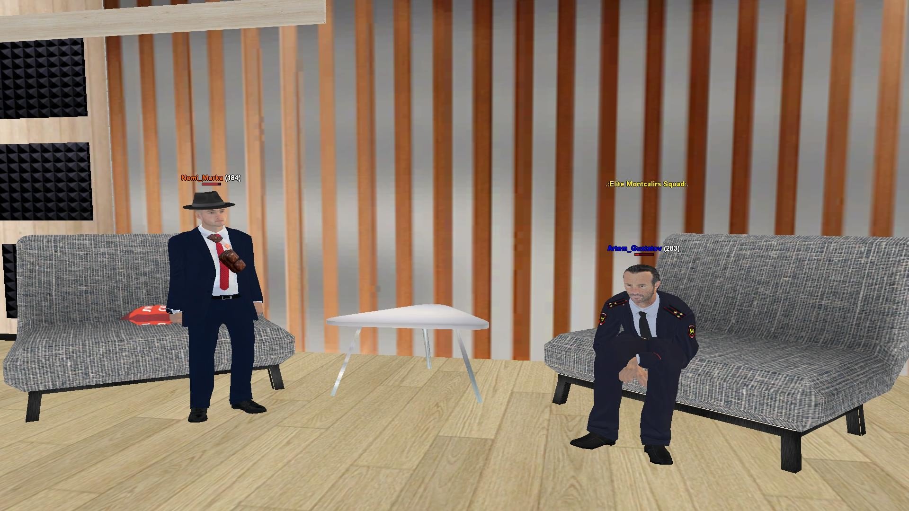

📣 Объявление: набор в редакцию
ТРК «Ритм» открывает двери для тех, кто умеет не просто писать — а создавать атмосферу.
🔸 Ждем каждого, кто чувствует ритм и хочет вещать.
📡 Эфир с Артемом Густавовым

🎙 В эфире — Артем Густавов
— Сегодня мы проведем интервью у Полковника МВД Артема Густавов. Приветствуем вас в эфире!
— Здравия всем!
— Думаю слушателям будет интересно услишать немного о вас.
— Согласен
— Давайте начнем.
— Какие ключевые вызовы на сегодня стоят перед вами?
— Довольно простые
— Можем услышать пример?
— Сегодня я проверил 10 рапортов, повысил 2 человека… Подготавливался к посту генерала.
— Даже так... Хорошо идем далее... Как вы оцениваете эфективность работы подразделений в нашем регионе?
— Очень хорошо. Настолько наши подразделения хорошо работают что нам повысили ЗП.
— Нам бы так..
— Artem_Gustatov}: Бывшему губернатору мы нравились…
— Изменились ли приоритеты МВД за последний месяц? Если да - в чём именно?
— Приоритеты МВД всегда были уменьшением уровня преступности. И так навсегда и останется.
— А какие показатели работы МВД вы бы взяли как основные для её оценки? Сегодня я анализировал наши труды...
— Наши сотрудники за месяц снизили преступность на 23%.
— Как МВД реагирует на новые угрозы - киберпреступность, дезинформацию, кризисные ситуации?
— Наш добрый старый МВД ни разу не видел такие угрозы... Поэтому старший состав проводит много лекций об этом.
— Как мотивируются сотрудники в условиях высокой нагрузки?
— Просто когда сотрудники стрессуют, мы напоминаем им о премии. Большой премии.
— Вас походу очень хорошо спонсируют. Есть ли у Вас личные истории, которые вдохновляют или стали поворотными в службе?
— Конечно... Однажды у нас в Арзамасе был один преступник... Звали Максимка Морозов. Он уничтожал наших сотрудников один за другим... Но мы дали ему отпор.
— Уничтожал ето в буквальном смысле?
— Естественно. Мы тогда потеряли половину МВД.
— Как МВД работает над повышением доверия граждан?
— МВД отвечает на звонки, хорошо обращается к гражданам, и я даже планирую... Добавить отдел для принятия звонков.
— Ето было бы кстати. Играют ли роль ТРК в формировании имиджа МВД?
— Как вы сейчас видите, граждане которые нас слушают больше о нас узнали. Вам благодарность.
— Какие стратегические цели вы ставите перед собой как заместитель Генерала?
— Я пытаюсь достигнуть лучших времён МВД. Провожу больше лекций... Учу новых сотрудников. Все меня любят в нашем составе...
— Как вы видите МВД через месяца два?
— Я на посту Генерала, провожу лекции сотрудникам, едем на рейды.
— Что бы Вы хотели сказать молодым людям, которые планируют поступить к вам?
— У нас очень добрый состав, мы всех приглашаем в нашу организацию! Лёгкие повышения и большая зарплата!
— Что лично для вас значит служба в МВД?
— Служба в МВД - это цель моей жизни. Я очень люблю эту организацию, и хочу передать эту любовь в МВД другим.
— Были ли моменты, когда вы всерьёз задумывались о смене профессии?
— Были, когда у меня пропали важные бумаги с дневной нормой... Я хотел уйти тогда. Для меня таким стали: Тёма Холодок, Владислав Монтклаир, Токсик Шеих, Кенди Миллер спасибо им!
— Как вы восстанавливаете силы после напряжённых рабочих дней?
— Я люблю проводить строи для расслабления. Меня расслабляет придумывание задания.
— Есть ли у Вас хобби или увлечения, которые помогают сохранять баланс?
— Единственное хобби которое я могу придумать это проверка рапортов. У меня нет не хобби, не увлечений... Весь в работе.
— Что вы считаете своим главным достижением?
— Когда я услышал что мне передадут пост Генерала, я почуствовал себя лучшим замом. "Цель достигнута"
— Какой совет вы бы дали себе, только вступающему на путь МВД?
— Не бойтесь, читайте правила, соблюдайте субординацию.
— Хорошо.. Ждем вопросов от жителей области на номер 10-01. Какой ваш самый любимый сотрудник?
— Я не такой человек. Не попадусь на ваши блатные ловушки.
— Хех. В которого сотрудника вы не верили?
— Честно, я верю во всех наших сотрудников. Они все мои любимчики.
— Вопрос к первому вопросу. А смог ли он подняться у ваших глазах? Владислав Монтклаир - кто он для вас?
— Он мой наставник и друг. Узнал всё про пост заместителя от него.
— Отлично.. Любите ли вы своих подполковников?
— Сергей, я тебя люблю, когда комплексы свои лечить будешь?
— Сколько времени вы уже на службе?
— Примерно 2 года.
— Хорошо... На етом вопросы от жителей области подошли к концу.. Хотите что либо добавить?
— Хочу поприветствовать: Сергея Нестеренко, Владикса Льяшова, Эльдара Бакински, Тёму Холодка, Андрея Минор, Артёма Баунти на этом всё и Делла Бренера.
— Вопрос от ТРК сложно ли быть Полковником МВД?
— Не сложно, норма лёгкая, состав добрый. Всех приглашаю на этот пост!

— Тогда... Спасибо вам за ваше время! Это было интервью телерадиокомпании Ритм. Спасибо за внимание, оставайтесь с нами..
📡 Эфир с Максом Де Ликсом
🎙 В эфире — Макс Де Ликс
— Приветствуем вас!
— Здраствуйте область!
— Думаю не будем медлить етот вечер будет особенно интересным.
— Согласен с вами, колега
— Вы когда - нибуть чуствовали, что вас никто не слушает?
— Знаете за все время моей долгой службы и работы жизнь достаточно меня потрепала. Но больше всего это чусто я запомнил с поста Генерала Министрерства обороны.
— Что вас держит в этом всём, когда всё горит?
— Держут меня тут люди, которые со мной с первого моего государственого поста, за что я им благодарен очень сильно.
— Как вы реагируете на публичную критику?
— Позитивно, для меня лично критика как характеристика человека, все не идеальны
— Что может вас вывести из себя за 10 секунд?
— За 10 секунд выводит из себя младший состав когда обступают тебя вокруг и орут про отчет на столе.
— Вы умеете отключаться - или все тащите на себе?
— Везде где я служил большенство ответствености я брал на себя.
— Что вы умеете делать так, как никто другой?
— Как никто другой я умею решать конфликты словами, это моя сильная сторона.
— Вы вообще хотели быть замом - или просто не было выхода?
— Когда мне написал мой хороший друг сегодня главный редактор и предложил занять такой высокий пост, я не думая согласился.
— Вы когда - нибудь чувствовали, что система против вас?
— Да, такое чуство сложилось за такой долгий промежуток времени особено когда на тебя давит начальство выше, я думаю вы понимаете о ком я.
— Как вы относитесь к Гл. Редактору?
— Ну тут я отвечу фразов "великого" политика всех времен и народов "Этот глав редактор лучший худший глав редактор которого я видел за свою жизнь". Отсылку кто то уловил?
— Упустим етот момент. Что бы вы сделали, если бы никто не мешал?
— Я бы пошел в ФСБ и задержал весь список форбс, ведь там все преступники.
— Что вы делаете, когда всё рушится, а все ждут от вас спокойствия?
— Отвечу словами другого не менее известного политика "Я всегда спокоен как мухи на мертвом удаве". За столько времени вывести меня из себя не простая задача в любой ситуации.
— Хмм. Вас когда-нибудь называли тираном - и вы такие: Ну, не без этого?
— Да, когда я был полковников МВД а сегоднешний глав редактор генералом, он заставлял меня быть строже чем того требует ситуация, потому что считал что рядовые этого заслужили.
— Уверенны в этом?
— На все 101 процентов.
— Хорошо, попрошу слушателей задать вопросы которые они б хотели услишать в эфире. Вы любите Мурку?
— Я его уважаю и ценю как хорошего друга и товарища который со мной везде таскаеться, кхм... хотел сказать всегда поддержит.
— Спасибо и на том. Сказать правду но потерять что-то или обмануть и получить выгоду?
— Если можно я промолчу и останусь как говорила моя учительница физики - в состоянии спокойствия
— Каких вы б хотели упомянуть знакомых с других организаций?
— Много хороших знакомых остались в других организациях, всех не упомниш но могу выделить: Андрея Праковиха, Юрия Сыдора, Рататуя, Кирилла Уайлда, Стива Адамса, Андриано монтато, Глеба Найтмара, Андриана Якимова и других.
← Назад на главную
— Странный вопрос, может вы познаете в нем смысл. Вы любите бетон?
— Бетон один из величайших изобретений человечества он сделал огромный вклад в историю человечества.
— Вопрос от меня - знаете ли вы 'Приходьков' у вас есть к нему чуства?
— Это местный гомосексуал проживающий на мусорке возле 24.7 "Корзинка" в Лыткарено. Хороший был человек, мент пока не начал бухать.
— Понял вас.
— Это все алкоголь с людьми делает. Не злоупотребляйте алкоголем граждани!
— Что бы вы добавили на последок?
— Хочу добавить что жду всех в ТРК "Ритм" у нас тут всегда весело и дружный колектив. Также передаю приветы - колективу высшего руководства по стране за нашей областью а конкретно - Приходьку, Родриго, Андрею, Арсению и Ольге. Всех благ, был рад разбавить обстановку на радио в такое время.
📡 Это был эфир ТРК «Ритм».
Говорили честно. Слушали внимательно.
Сигнал принят.